A világ legsikeresebb Formula 1-es csapata
1105Verseny
846Dobogó
116Versenyző
Üdvözöllek
Fedezd fel a Ferrari világát
Ez az oldal a Scuderia Ferrari Formula 1-es csapatának történetét, technológiáját és legendás pilótáit mutatja be. Böngészd az aloldalakat és merülj el a motorsport egyik legnagyobb legendájának világában.